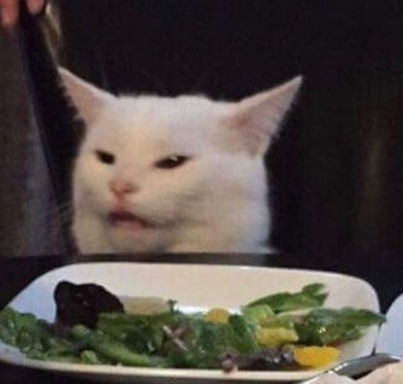
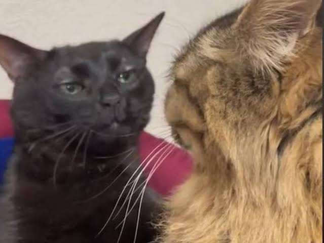
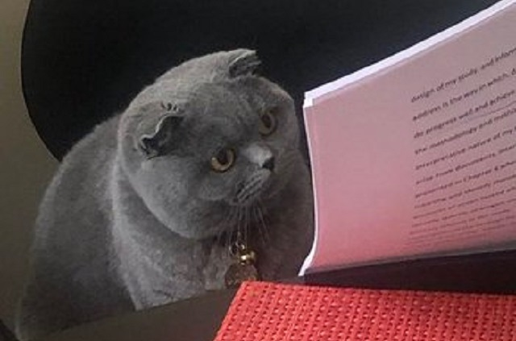
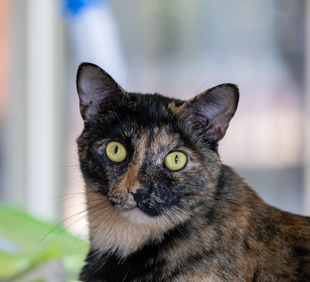
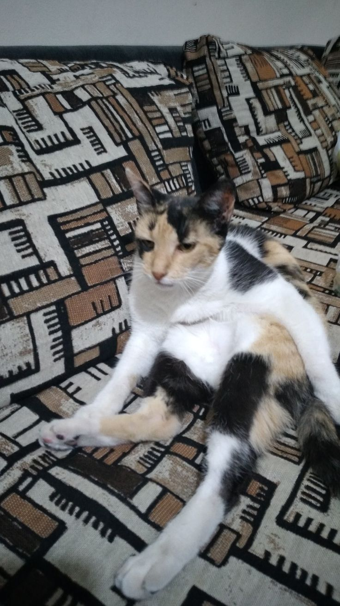
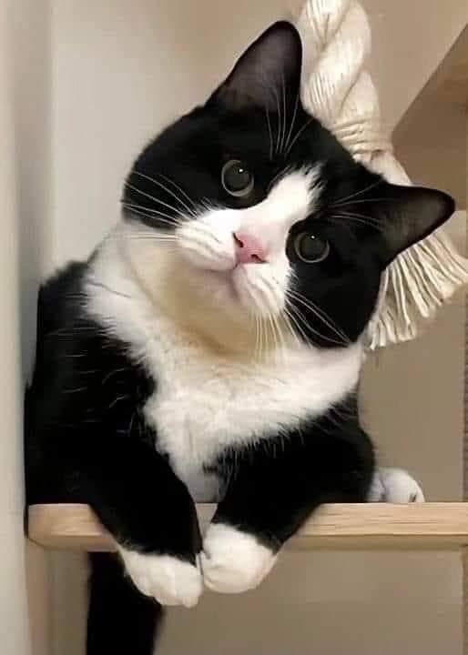

Naranja
Amistoso, curioso y con una energía encantadora. Suele ser el alma juguetona de la casa.

Descubre las cualidades que suelen asociarse a cada pelaje. Aunque cada gato es único, todos tienen una forma especial de conquistar el corazón.
Amistoso, curioso y con una energía encantadora. Suele ser el alma juguetona de la casa.
Elegante y sereno, disfruta de la calma y observa el mundo con una sensibilidad especial.

Misterioso, independiente y leal. Cuando confía, ofrece una compañía profunda y silenciosa.

Equilibrado y tranquilo, combina una curiosidad suave con una gran capacidad para adaptarse.

Intenso y decidido, tiene una personalidad marcada y un carácter tan único como su patrón.

Vivaz, expresivo y lleno de contrastes; siempre parece tener una opinión que compartir.

Sociable y elegante, mezcla una actitud juguetona con el porte de un pequeño caballero.
